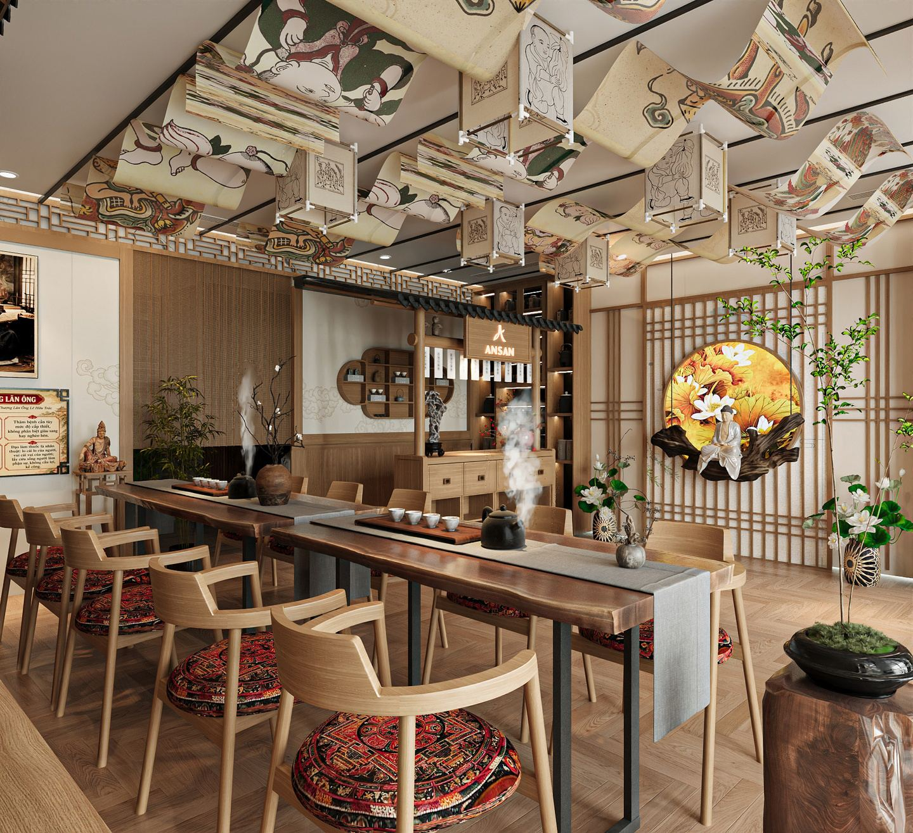
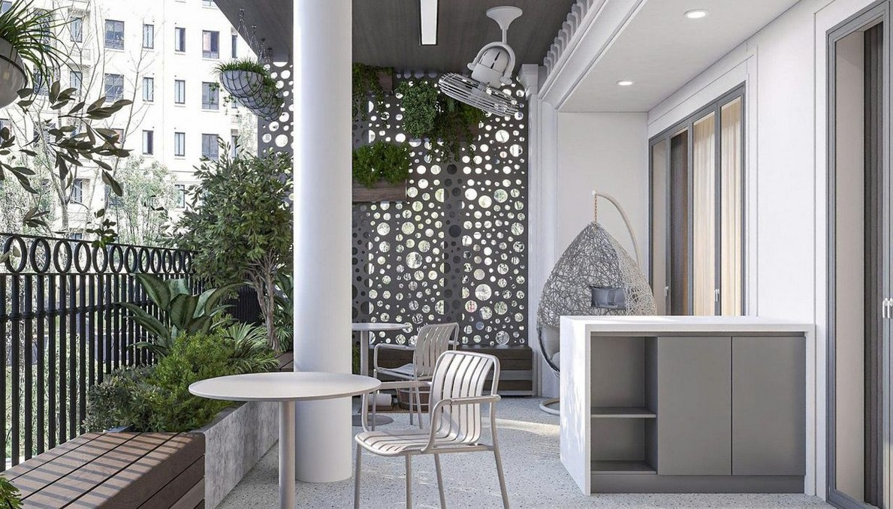
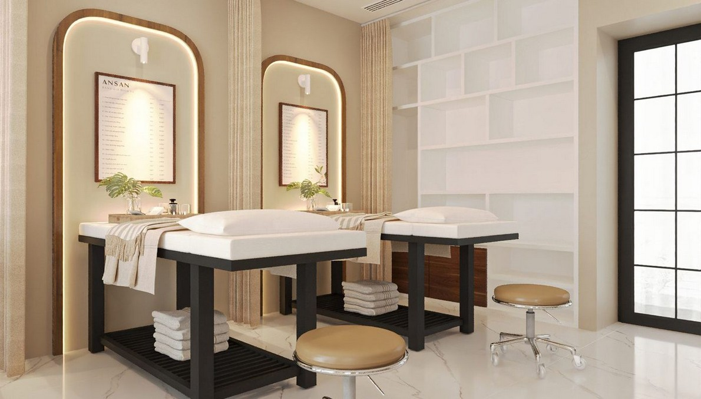

Thưởng trà, workshop, ngâm chân dược liệu
Phòng trà khoảng 20 chỗ, bàn trà dài cho workshop cộng đồng, ban công xanh để ngâm chân.

Ansan Group · An lành để san sẻ
Dưỡng sinh Y học cổ truyền, đặt vào nhịp sống hôm nay — gần nhà, theo quy trình chuẩn, có người đồng hành.
An lành để san sẻ
An lành, an yên trong thân và tâm — điều dưỡng sinh hướng tới cho mỗi người.
San sẻ — sức khoẻ của một người được giữ gìn sẽ lan thành hạnh phúc của cả gia đình, và mô hình Ansan được san sẻ tới từng khu dân cư.
Năm nhánh cùng một tên: đào tạo, nghiên cứu, sản phẩm, thiết bị và dịch vụ dưỡng sinh.
Chuỗi cơ sở dưỡng sinh công nghệ cao, chăm sóc cơ — xương — khớp.
Khám phá →Đào tạo kỹ thuật viên, chứng chỉ ngắn hạn cùng trường y.
Khám phá →Ngâm chân, cao đắp, tinh dầu, trà, thực dưỡng mang nhãn Ansan.
Khám phá →Thiết bị hỗ trợ chăm sóc, đi kèm đào tạo và vật tư.
Khám phá →Hành trình nghỉ dưỡng kết hợp chăm sóc sức khoẻ.
Khám phá →Tĩnh tâm trước, chăm thân sau. Mỗi điểm Ansan đều có Không gian Tâm và Không gian Thân.
Phòng trà khoảng 20 chỗ, bàn trà dài cho workshop cộng đồng, ban công xanh để ngâm chân.

Sáu giường, rèm riêng tư. Làm ấm, thư giãn cơ, thiết bị hỗ trợ và thủ pháp Y học cổ truyền.
Lắng nghe, đo huyết áp, sàng lọc an toàn.
Liệu trình và cường độ phù hợp từng người.
Làm ấm, thư giãn cơ, thiết bị hỗ trợ, thủ pháp Y học cổ truyền.
Tư thế, bài vận động nhẹ giữa các buổi.
 Ảnh phối cảnh thiết kế
Ảnh phối cảnh thiết kếvi · Cơ sở mẫu · khai trương 11/2026

vii · Hợp tác mở điểm
Ansan chuyển giao mô hình, đào tạo, sản phẩm, thiết bị và marketing. Mỗi điểm là một đơn vị kinh doanh độc lập, liên kết bằng hợp đồng hợp tác.
Ba gói theo thiết bị, mọi điểm đều có Góc Tâm và Không gian Thân. Thiết bị và quyền lợi chi tiết trong hồ sơ đối tác; gói và phí hệ thống đang chờ HĐQT chốt. Ansan không cam kết lợi nhuận hay thời gian hoàn vốn.
Nhận hồ sơ đối tácAnsan × Trường Trung cấp Y khoa Việt Nam
viii · Ansan Edu
Biên bản ghi nhớ với Trường Trung cấp Y khoa Việt Nam, ký ngày 20/10/2026. Học viên trở thành kỹ thuật viên cho các điểm Ansan, theo một chuẩn tay nghề thống nhất.
Ban lãnh đạo Dự thảo · chỉ đăng khi HĐQT thông qua
Chuẩn mực & đối tác
Quy trình 4 bước, menu 10 liệu trình, phiếu đánh giá thể trạng và sàng lọc an toàn trước mỗi liệu trình.
Định kỳ đánh giá quy trình dịch vụ và tay nghề kỹ thuật viên theo bộ tiêu chí, có ngưỡng đạt.
Không hứa chữa khỏi; câu miễn trừ chuẩn; nội dung sức khoẻ được duyệt chuyên môn trước khi phát hành.
Giá niêm yết công khai; quản lý tiền thẻ trả trước theo quy chế, đối soát định kỳ.
Thẻ liên thông, định mức vật tư tiêu hao theo từng dịch vụ, báo cáo theo cơ sở.
Ban kiểm soát chất lượng dịch vụ — pháp lý quy trình, giám sát toàn hệ thống.
Biên bản ghi nhớ ký ngày 20/10/2026 — đào tạo kỹ thuật viên, chứng chỉ nghề ngắn hạn và cơ sở thực hành.
Trung tâm Hỗ trợ Giáo dục và Phát triển Cộng đồng — phối hợp đào tạo, truyền thông cộng đồng, đồng hành cùng Ansan Edu.
Đang mở rộng hợp tácTrường, viện đào tạo y dược · Nhà sản xuất thiết bị chăm sóc sức khoẻ · Đơn vị sản xuất sản phẩm sức khoẻ · Đối tác du lịch sức khoẻ
Góc dưỡng sinh & tin mới


Tiêu đề bài là minh hoạ — thay bằng bài đã duyệt khi đăng.
Chúng tôi gọi lại trong 24 giờ. Hoặc gọi thẳng 0936 262 499.